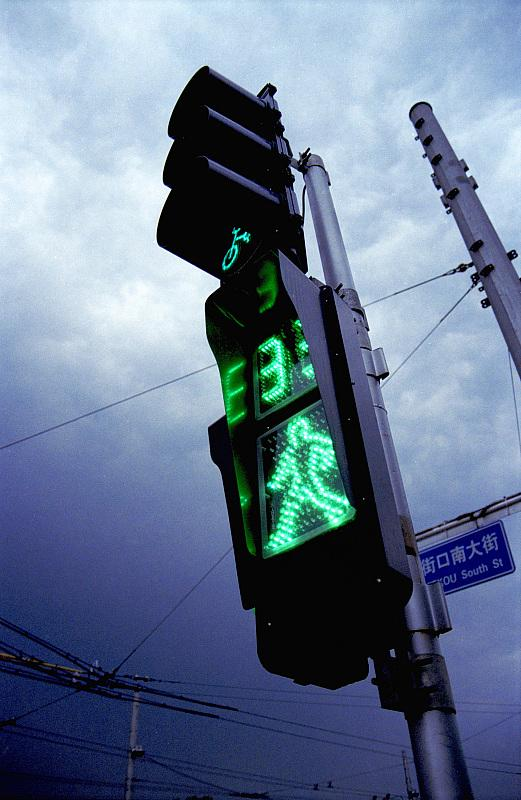

luminal2014-11-29 10:383.92 分
操作性 4.00耐用性 3.50性价比 5.00解像力 4.00色彩还原 4.00机械结构 3.00
人参大棒槌2014-05-10 18:004.17 分
操作性 4.00耐用性 3.00性价比 5.00解像力 5.00色彩还原 5.00机械结构 3.00
柒郎2014-01-18 18:593 分
操作性 3.00耐用性 3.00性价比 3.00解像力 3.00色彩还原 3.00机械结构 3.00
商汤之梦2013-10-25 13:094.25 分
操作性 4.50耐用性 4.00性价比 5.00解像力 4.00色彩还原 4.50机械结构 3.50
vleepmx2013-09-07 18:184.67 分
操作性 4.50耐用性 4.00性价比 5.00解像力 5.00色彩还原 5.00机械结构 4.50
云里金刚2012-10-20 22:334.58 分
操作性 4.50耐用性 4.50性价比 5.00解像力 4.50色彩还原 4.50机械结构 4.50
photosaint2011-12-06 10:424.08 分
操作性 4.50耐用性 3.00性价比 5.00解像力 5.00色彩还原 5.00机械结构 2.00
jinshu2011-09-29 13:234.08 分
操作性 3.00耐用性 3.50性价比 5.00解像力 5.00色彩还原 5.00机械结构 3.00
mytam2011-07-31 15:093.67 分
操作性 4.00耐用性 3.00性价比 4.50解像力 3.50色彩还原 4.00机械结构 3.00
siliconworm2011-06-12 08:28
siliconworm2011-05-02 05:543.75 分
操作性 2.00耐用性 5.00性价比 5.00解像力 5.00色彩还原 5.00机械结构 0.50
siliconworm2011-02-16 10:42
siliconworm2010-10-21 09:59

mimikim2010-09-25 13:034.42 分
操作性 4.50耐用性 5.00性价比 5.00解像力 4.00色彩还原 4.50机械结构 3.50
leeyale2010-04-25 13:413.92 分
操作性 3.50耐用性 3.00性价比 5.00解像力 4.50色彩还原 4.50机械结构 3.00
飘曳2010-03-14 18:594.08 分
操作性 4.50耐用性 2.50性价比 5.00解像力 4.00色彩还原 4.50机械结构 4.00
狗头天下2008-10-17 23:213.75 分
操作性 4.00耐用性 0.50性价比 5.00解像力 5.00色彩还原 4.00机械结构 4.00
liheqiao2007-11-27 15:193.33 分
操作性 3.00耐用性 2.50性价比 4.00解像力 4.50色彩还原 3.00机械结构 3.00
lxb2007-09-27 23:043.67 分
操作性 3.50耐用性 3.50性价比 4.00解像力 3.50色彩还原 3.50机械结构 4.00
scz9222007-09-27 22:093.92 分
操作性 4.50耐用性 4.50性价比 3.00解像力 4.00色彩还原 3.00机械结构 4.50